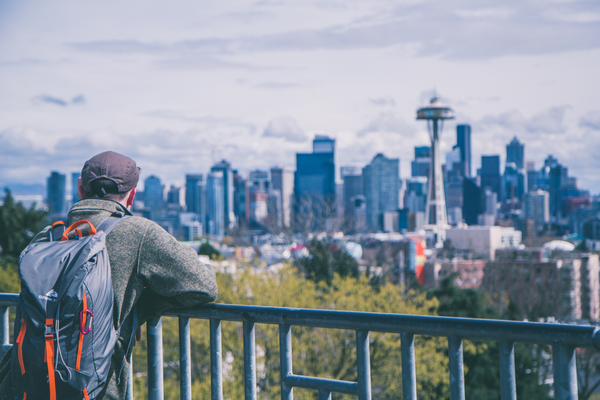

- Pike Place Market
- Kerry Park
- Gasworks Park
Enjoy a varied number of mini-shops showcasing fresh produce, fish, flowers, raw honey, hand-made goods and what not. Grab a coffee nearby from the first Starbucks shop. Stroll around the market and try on varied options available for food. Try the piroshky piroshky pastry. And maybe visit the infamous gum wall.
Some of the famous places to try are Amazing greek yoghurt, the flying fish, Beecher's cheese (Try their Mac & Cheese), Biscuit bitch, Indi chocolate, Rachel's ginger beer, etc.
Visit this free public park which has the most beautiful views of the city's skyline. Enjoy the early sunrise or the sunset and take pictures of the beautiful colorful sky. Sit, enjoy and relax at this park for hours. Plan a picnic with friends.
There are huge structures at the park which were part of a former Seattle Gas Light Company plant. The view is spectacular from here. Get your dslr to capture them. Sit on the grass hills and enjoy the beautiful skies.
Walk around Burke Gillman trail towards southeast and reach gasworks park. Wark around the canal and reach this most famous parks in Seattle. Bask in the sun, enjoy picnic with friends or family. Read a book or enjoy a cup of coffee while mesmerizing the famous sunset.
It is a short walk up the hill to reach it. Get the spectacular views of the Space Needle to Elliott Bay and on a clear day of the beautful Mount Rainier in the background.